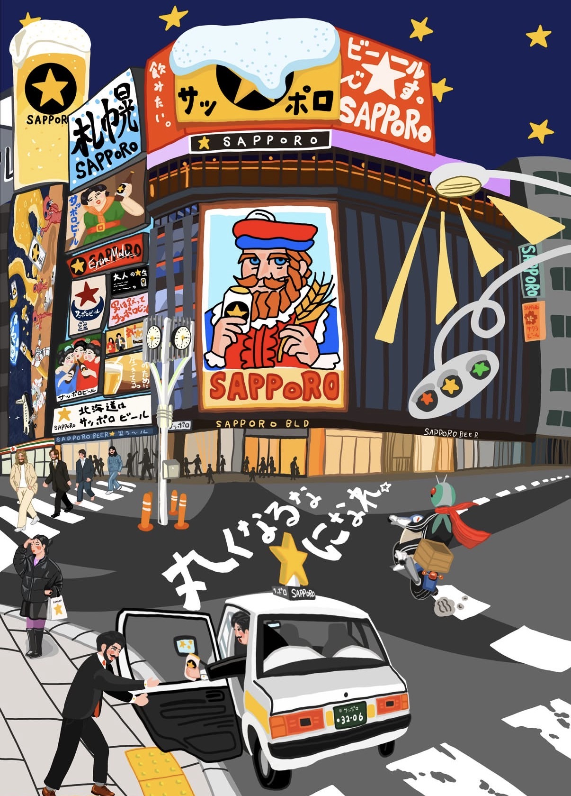

產房麻醉工作室
ORB 交班手冊
給接班夥伴的工作指引，慢慢看、不用急，有需要隨時翻。
點選下方任一張卡片，或左側選單，開啟該主題；左上「首頁」可隨時回到這裡。
每日工作 白班 / 兩頭
白班負責現場運作與設備點班，兩頭負責藥物核對與歸還。
白班工作人員
麻機開機測試
- 週一確認機器功能後，開啟呼吸器試打半天，下班前關機並 prepare auto on。
- 遇連假關機時，直接 shutdown。
- 記得上網填寫每日麻機檢核（機號：61、65）。
點班順序
櫃號 6 → 20 → 21 → 4 → 2
ABG / 血糖機測試
- ABG 藥水分 1、2、3；藥水 1 通常可自行更換，藥水 2、3 放冰箱、由廠商更換。
- 點選藥水畫面會顯示需更換日期。
急救車點班
- 白班覆核前一天點班；兩頭負責中午及下午點班。
- 開啟急救車須點班並更換鎖，無鎖向補給室領取。
PCA 機器回收點班
- 回收機器目前放在 ORB 住院醫師休息室，拿回辦公室擦拭歸位。
- 目前 8 台（1 台維修中），確認數量後填 PCA 點班單。
產房探視（減痛分娩）
- 填寫「PCA 設備管理系統」表單。
- 白板：藍色＝待產、粉紅＝安胎。
- 重點：機器號碼、病患姓名、產程進展、疼痛指數、機器數據與管路固定、FHB。
點班登記本明細（自費 / 高價 / 衛材 / 吸入藥 / 藥包）
自費 / 高價藥物登記本
Bridion x10Droperidol x3Acetamol x2One day pain x5Voluven x10Gelofusine x10
自費衛材登記本
溫毯(上) x30溫毯(下) x20溫毯(床墊) x4溫毯(ERAS) x2BIS x10（備兩盒）PSI x10（備兩盒）ANI x5Nasal high flow x2
PSI 機器放置位置：R31、33、35、37。
吸入性麻醉藥登記本
Sevoflurane x12（一箱 9 瓶）Desflurane x24（一箱 6 瓶）
藥局藥物包登記本
Nalbuphine x1KCL x5Precedex x5Dynastat x5
另有：Painless 藥包登記本、PCA 機器點班表。
兩頭工作人員
藥車作業流程
- 評估藥盤內無異常藥物/異物，檢視 Tray 盤單與藥量是否正確，收回白單及空瓶，確認空瓶數量與白單一致。
- 白單依房間順序釘成一份，另用白紙記錄各房間空瓶數量，進入「藥品庫儲管理系統」核對。
- 確認藍單與白單數量，在每份藥物本右上角寫上數量。
- 由系統進入 AN1 → 選日期下載 → 篩選 AN1 → 逐一輸入藥碼（
FRE01、FF050、BP370、AM620、FM010）→ 正負抵消上灰、確認數量塗色塊 → 依顏色排序統計。有問題直接除錯。 - 確認後丟棄三級以下管制藥品空瓶，由勤務推回 ORA 藥局（通常排在 ORC 藥車之後）。
ADC（電子藥櫃）作業流程
- 確認藥物是否正確歸還：登入 → 調劑條碼補印 → 確認是否有「當日之前」名單。若有，表示歸藥流程有異。
- 歸藥不確實 → 補印條碼，重新執行歸藥。
- 沒有歸還 → 從「AUTO IX 電子藥櫃操作系統」查藥物動態，確認是否使用；未使用則尋找，通常在冰包前方袋子裡。
- 收藥：白單依日期訂成一份 → 登入按「庫存回收」→ 輸入藥碼（
BP370、AM620、AK150、THI04）→ 逐一清點空瓶並核對 → 收藥（無論是否使用都收到大粉紅回收藥盒）。流程：選藥物 → 確認數量 → 回收。 - 列印班表：先改橫向 → 檢視 → 分頁預覽調整大小 → 列印。
每週 Checklist 週一～週五
每日常規每天都要做；下方為各日特殊事項。
每日常規（每天都要做）
每月行事曆
月曆顯示每個工作天的特殊任務；每日常規（上方）每天都要做。盤點等每月固定任務會自動標在正確日期，點選日期可看當日完整工作內容。
以文字檢視各日特殊任務
週一
- OPA 泡消
- 10AM 前完成點滴申請（N/S x4、L/R x6）
- 呼吸機空打至中午
- 查看衛材申領單
- 預班表：房間安排及加班序號
- 請刀房書記領外出服各 15 件
週二
- 預約班表、衛材請領單回 ORA
- 10AM 前完成公藥申領，確認 2PM 派工
- 衛材回到工作室
週三
- 每月第四個週三：庫房盤點
- 將大班表的班填到預班表，公告可開始預班
週四
- 10AM 前申領點滴（N/S x1、L/R x2）
- 儀器保養
- 每月第三個週四：公藥盤點
- 兩週一次安排房間及加班序號、P 班
- 180 公分呼吸管（怡辰）
- 衛材回辦公室
- 確認列印下週便當菜單、取出下週名牌
週五
- 7AM 準時貼上補休單
- SA 車補充
- 檢查 ABG 藥水用量
- 確認氧氣桶剩餘量、請領並消耗
- 確認更換集水瓶
每月工作 分工 / 統計
| 項目 | 負責 / 對象 |
|---|---|
| 績效統計（含工作人員錯誤紀錄） | 嘉純護理長 |
| 用電安全查核表 | 秀琴姐 |
| 每月藥物及溫毯、BIS 使用量統計 | 秀花姐 |
| 每科刀況統計 | 涵薰醫師 |
| 每月 Fiber 消毒確認 | 懷璧姐 |
每月必做提醒
工作人員若有錯誤，請當下記錄；每月月初彙整後寄給阿長（嘉純護理長）。
遇到有併發症的案例，當週下午三點與麻姐、住院醫師、主治醫師及主任做簡短討論與檢討。
每月高價藥物 / 衛材統計 — 操作流程
資料來源：藥品庫儲管理系統處方消耗明細、秀花姐特衛查詢系統、秀花姐 E-mail、鈺鍊姐減痛統計（由秀花姐轉寄）。
- 「藥品庫儲管理系統」→ 處方明細查詢 → 輸入 (1) 日期 (2) 過帳別：全部 (3) 部門代碼：AN1 產房麻醉 (4) 藥碼 → 查詢確認數量 → 填報表。
- 「HISS system」用德哥帳號登入 → 手術管理系統 → 查詢作業 → 麻醉科衛材藥品使用統計 → 查詢消耗區間 / 單一品項代碼 → 填報表。
- BIS、PSI 在計價系統為同一代碼，需查自費項目登記本手動計算。
- 計算「ORB 房間」使用總量。
產房麻醉計價 很常出錯
所有 ORB 麻醉：消耗地點＝產房麻醉；成本分攤＝婦幼麻醉（PCA 類除外，見下）。
一、健保麻醉基本原則
麻醉時間 < 2hr → S；≥ 2hr → L
二、婦產相關手術計價
點選各刀種展開計價細節。
取卵（Ovum Pick-up）
入口／性質急診麻醉 / 急診
麻醉方式IV / GM
計價≤1hr → PR-3；>1hr → PR-S
植入（Embryo Transfer）
入口／性質門診麻醉 / 常規
麻醉方式IV / GM
計價一律 PR（未過健保卡則依婦科 Schedule）
自費 C/S
入口／性質住院麻醉 / 常規
麻醉方式SA / GE
計價依實際方式（S/L），不可計 PR
C/S + T/L
入口／性質住院麻醉 / 常規
麻醉方式SA / GE
計價C/S 健保（S/L）；T/L 自費計 PR-3，以手術結束前 15 分鐘劃分，時間須與 OR 一致
C/S + Morphine（含 Kytron）
入口／性質住院無手術麻醉
麻醉方式SA
計價計 PR-6，只輸時間不帶藥；Morphine + Kytron 須同列健保 SA 帳單
僅 T/L
入口／性質住院麻醉 / 常規
麻醉方式GE
計價≤1hr → PR-3；1–2hr → PR-S；≥2hr → PR-T
BS + PS（乳外 + 整外）
入口／性質住院麻醉 / 常規
麻醉方式GE
計價BS 從乳外 GE Schedule（S/L）；PS 從整外 PR Schedule，一律 PR-T
三、Painless Labor（無痛分娩）／ 術後 PCA
| 項目 | 條件 | 計價 | 成本分攤 |
|---|---|---|---|
| Painless Syringe Pump | — | PR-S | 婦幼麻醉 |
| Painless PCA（白班） | 08:00–22:00 | PR-E | 疼痛科 |
| Painless PCA（夜班） | 22:00–08:00，執行＆施打醫師均為 VS | PR-F | 疼痛科 |
| IV-PCA | 住院無手術 | PR-I | 疼痛科 |
| EA-PCA | 住院無手術 | PR-E | 疼痛科 |
四、最常出錯的規則
- 婦產部（婦癌刀除外）皆屬 DRG，結束時間以開刀房時間為準。
- 非婦產部刀種，結束時間以麻醉時間為準。
- 婦產部中繼時間會抓「麻單紅線」結束時間，進 HIS 計價務必再確認。
- 管制藥領取與房間綁定，務必輸入正確房間：OR（31、32）、待產室（L1、L2、檢1）。
- 乳房外科一律從 Breast Ca Schedule，不可從 Self-Pay Schedule；中繼常自帶錯誤，請人工確認。
- 兒童牙科（自費）Schedule 會 on CP，記得區分 S / L。
- OPD 常自帶錯誤時間，請確認輸帳日為當天。
更改房間：德哥帳號 → 手術管理系統 → 查詢作業 → 輸入索引號 → 右上「變更扣庫房間」。
減痛分娩 建檔 / 機器 / 計價
完整流程另見線上連結（見「常用連結」）。以下為建檔、機器設定與計價重點。
電腦資料建檔流程
- 麻醉資料建檔：「PCA 設備管理系統」→ 麻醉待產 → 麻醉資料建檔 → 從孕婦名單進入建檔。需輸入：待產房號、手術內容（painless labor）、疾病與藥物病史、配置日期、配給量（藥包總量）、完成機器設定劑量。
- 藥劑選擇（新）：麻醉資料建檔 → 藥劑選擇 → 選「
ROP(0.1%)合併FEN(1.5ug/ml)及NS共500ml」。 - 新增 painless 紀錄（白單）：麻醉待產 → 訪視紀錄（白單）→ 點選孕婦白單 → 新增白單 → 填寫後存檔。
- 掛機：右下角掛機欄位 → 填地點 ORB（改版後無此欄）→ 選 PCA 機器號碼 → 勾選掛機。
- 無 schedule 建檔：麻醉待產 → 麻醉資料建檔 → 選「＋無麻建檔」→ 輸入病例號。
書面登記：Tray 盤 2%Xylocaine 登記單、施打 painless 登記本、領取 painless 藥包登記本、藥包上、機器外。
機器設定劑量與步驟
參考劑量（新藥包 PAINLESS 預設程式）
以機器內建「PAINLESS」預設程式為準；若要調整務必設定最小劑量，否則之後無法修改。
- 開機 → 選「New Infusion」→「Preset Programs」（如要求密碼：
7770） - 於程式清單選擇「PAINLESS」
- 確認第一頁：VTBI 560 ml、Intermittent Dose 8 ml、Dose Interval 01:00（每 60 分）、Continuous Rate 0 → Next
- 確認第二頁：Demand Dose 5 ml、Dose Lockout 00:10（10 分）、Total Dose／1hr 30 ml
- 左下出現 Prime → 按下開始 Prime → 確認管路無空氣 → 右下「Finish Prime」
- 按「Set Delay」，待接上病患再開啟
計價（住院無手術麻醉計價系統）
- 白班 08:00–22:00 → PR-E
- 夜間 22:00–08:00 → PR-F（執行及指導醫師輸入主責／當日值班主治醫師）
- 消耗地點：產房麻醉 / 成本分攤：疼痛科
- 系統藥劑選擇：
ROP(0.1%)合併FEN(1.5ug/ml)及NS共500ml - Syringe 或 Bolus（非 PCA）：PR-S
主任（賴 V）IV-PCA Order
- Formula II, Fentanyl
- Loading 2ml、Continuous 0、Bolus 2ml
- Lockout 8min、4hr limit 30ml
PCA 特別申撥
- 時機：鈺鍊姐放長假時領 PCA 藥包。
- 新藥包：ROP 0.1% + FEN 1.5 mcg/ml + NS 500ml（舊申撥碼 FP040 已隨藥包更新，申撥前向中央藥局確認新碼）。
- 列印「麻醉部病人自控式減痛醫囑」→ 打中央藥局（第一醫療 B2）藥師莉雯 4633 → Leader 自行領取。
藥物管理 簡碼 / 效期 / 配法
升壓劑 / 血管活性藥配法（含 Set 種類）
點選各藥物展開配法與建議劑量。
Dopamine · LA set
配法400mg + D5W 至 250ml
amp 數2 安瓿
濃度1600 mcg/ml
建議劑量2–10 mcg/kg/min
Angidil (NTG) · NTG set
配法50mg + D5W 至 250ml（玻璃瓶）
amp 數5 安瓿
濃度200 mcg/ml
建議劑量0.2–2 mcg/kg/min
Primacor (Milrinone) · LV set
配法30mg + D5W 至 150ml
amp 數3 安瓿
濃度200 mcg/ml
建議劑量0.375–0.75 mcg/kg/min
Dobutrex (Dobutamine) · LA set
配法500mg + D5W 至 250ml
amp 數2 安瓿
濃度2000 mcg/ml
建議劑量2–20 mcg/kg/min
Levophed (Norepinephrine) · LA set
配法16mg + D5W 至 250ml
amp 數4 安瓿
濃度64 mcg/ml
建議劑量0.01–0.1 mcg/kg/min
Epinephrine · LA set
配法16mg + D5W 至 250ml
amp 數1 安瓿
濃度64 mcg/ml
建議劑量0.01–0.1 mcg/kg/min
麻醉藥品開封後有效期限
| 藥品 / 劑型 | 常溫儲存 | 冷藏儲存 |
|---|---|---|
| Insulin Actrapid HM Vial | < 30℃ | 42 Days |
| Ketamine Vial | 避光、< 25℃ | 14 Days |
| Ketamine Syringe | 1–2mg/ml：1 Day | — |
| Heparin Vial / Syringe | Vial 28 Days / Syringe 1 Day | — |
| 2% Lidocaine Vial / Syringe | Vial 3 Days / Syringe 1 Day | — |
| 10% Lidocaine Spray Vial | 3 Months（查無引據） | — |
| 0.5% Marcaine / 1% Ropivacaine Vial | 不含防腐劑，使用完畢即棄置 | |
| Solu-Cortef Syringe | 1mg/ml：1 Day；2–60mg/ml：4 hrs | — |
| Solu-Medrol Vial / Syringe | Vial 2 Days / Syringe 3 hrs | Vial 2 Days / Syringe 1 Day |
| 2% Propofol Vial / 稀釋 | Vial 12 hrs / 稀釋 6 hrs | — |
| 1% Propofol Syringe / 稀釋 | Syringe 12 hrs / 稀釋 6 hrs | — |
| Esmolol 稀釋 | 1 Day | 1 Day |
| Anectine Vial / 稀釋 / Syringe | Vial <25℃；Syringe 常溫 1 Day | 稀釋 <10℃ |
| Trandate / Nicardipine Syringe | 常溫 1 Day | — |
| Levophed Vial / Syringe | Vial <25℃ 避光；Syringe 常溫 1 Day | — |
| Bosmin Syringe | 儘速使用 | — |
| Acetamol Vial | 調配後 30 mins | 30 mins |
| Dynastat Vial | 1 Day | — |
| Sugammadex Vial | 未避光：5 Days | 冷藏 5–8℃：1 Day |
| Precedex Vial | 1 Day（查無引據） | — |
| Chlorhexidine Bottle | 開瓶 1 Month；直接使用 1 Week | — |
| Nitrostat | 確實使用與儲存，與效期時間相當 | |
藥物簡碼表
| 簡碼 | 藥物 | 簡碼 | 藥物 |
|---|---|---|---|
| AG390 | Gelofusine | FF050 | Fentanyl |
| AK150 | Ketalar | FM010 | Morphine |
| AM620 | Dormicum | FRE01 | 1% Propofol |
| AX040 | 2% Xylocaine 20ml | THI04 | Citosol |
| BA610 | Acetamol | VOM01 | Vomstop |
| BP330 | Dynastat | REM02 | Remifentanil |
| BP370 | 2% Fresofol | JYE01 | Alcohol |
| BT490 | Voluven | BS290 | Smoflipid |
特衛簡碼
| 簡碼 | 名稱 |
|---|---|
| 55107090 | 溫毯 |
| 55101333 | TOF |
| 55101401 | BIS |
| 55105167 | One day pain |
| 55101335 | Naldebain |
公藥 / 衛材 / 點滴申領 供應中心 / 派工
點滴
週一、週四常規領取（週一 N/S x4、L/R x6；週四 N/S x1、L/R x2，10:30 前領）。緊急叫貨：藥物領取系統輸入數量 → 藥學部庫房（急診大樓 B2，分機 4613）→ 列印單交護理站勤務領取。
公藥申領單（常用品項）
- N/S 20ml120
- 50ml Xylocaine spray6
- Anectine10
- Easy antiseptic12
- Sevoflurane12
- Desflurane24
- Acetamol20
- Bridion20
- Voluven20
- Gelofusine30
- Dynastat20
- 酒精 75%2
- 乾洗手2
- RI1
供應中心領取規則
- 領物前打供應中心（分機 6022）通知並說出單號。
- 領取項目：耳溫套、血糖品管液、急救車安全鎖、OPA 試片、ADC 感熱貼紙。
- 115/05/05 起縫合包改「換領」（時間 8:00–15:30），電腦輸入後派工領取；數量不足可 KEY「借用」憑單領取。
- 腰麻包、消毒包：由「供應中心管理」系統輸入數量，勤務推回包布大網車（申領後隔日下午約 16:00）。
- 料號：麻醉包
G28100100011、治療巾包G28402010411、麻醉縫合包DST000013148。 - Guide wire：系統領取後請秀娟姐調撥（單位 CSR），大人 3 個、小孩 2 個（小孩為單位購買，向怡辰姐申請）。
派工流程（氧氣 / 衛材 / 公藥）
員工入口網 → 行政 → 行政管理系統 → 登入 → 傳送工作需求 → 填資料 → 06 衛材、氧氣桶（灌氧氣）、小推車 → 出發：第二醫療大樓三樓產房麻醉 → 到達：氧氣間 → 勾「二醫勤務」→ 確定傳送。
- 縫合包：到達 → 第一醫療 B2 補給室庫房
- 週二 11AM 領衛材：到達 → 第一醫療 B2 補給室
- 週二 2PM 領公藥：到達 → 中央藥局
衛材庫（地下 2 樓）2801；分機 2857 陳先生。
排班 一次排兩週
排班流程
- 週二通知大家記得預班。
- 週三收回預班表，護理長排班。
- 週四班表回到 ORB，排房間及序號，填好後 PO 在 ORB 群組。
- 週五早上 7 點準時放黑板上，同時查看填寫 PM 的秩序。
特殊注意事項
- R37、40 達文西房間有時有小兒達文西，需資深、會小兒外的麻醉護理師。可由「手術醫囑情單查詢作業（正式）」查兩週內是否有小兒外科達文西手術。
- R32 週四小兒外科是一整天，記得平均分配。
- R31 兒牙是週一、二、四。
- R32 該房人員盡量排回該房；眼科或取卵全天無刀時，該房人員會被調派 ORA 支援。
排班步驟細節
- 左上藍色＝房間；右上紅色＝加班序號（學姐資料夾有 excel，已排定一年）。
- 連續支援者盡量排同一房間。
- 取白紙填房號（直）及日期（橫）→ 非白班者打叉 → 將沒房間人員填入 → 填加班序號 → 再次檢視分配是否均勻。
- 目前有學員，學姐一人可 cover 兩間。
- 額外表單：Leader 排班本、小兒外科天數表、預 PM 表單（有 excel 算式，已列印至七月）。
- 列印月班表跑版時，從分頁預覽調整。
盤點 藥物 / 庫房
藥物盤點 — 每月第三個週四 15:20（雙月加盤急救盒）
- 盤點前 1–2 天藥師會給「護理站暨科室急救車、常備藥物及醫用氣體清點核藥記錄表」並通知下載 excel。
- 先消耗所有可消耗藥物（小量氧氣桶、洗手液、消毒液、Xylocaine 噴劑做庫存量確認）。
- 流程：員工入口網 → 行政管理系統 → 藥品庫儲管理系統 → 選「AN 婦幼麻醉科」→ 盤點 → 盤點表列印 → 清點數量/日期符合 → 盤點量輸入 → 選正確單位 AN → 盤點覆核。
- 效期 4 個月內貼提醒標籤，2 個月內主動告知管理人以科室公藥申領新品。
- 數量為負不用擔心，會從藥師端消耗（如 one day pain、Bridion，現場量對即可）。
- 藥物即將到期：告知藥師後到庫備系統「繳回 → 申領」。
- 逾期藥品：庫存回收下方有逾期藥品回收鍵。
庫房盤點 — 每月第四個週三
- 目標：「即時庫量查詢」數量與盤點量不可相差 10%；盤點數目與目前存量相比只能少不能多（多的收起來，盤點後再拿出）。
- 流程：倉儲作業 → 盤點表列印（選「定期盤點」下載 excel）→ 二庫作業 → 即時存量查詢 → 實際盤點 → 將多餘衛材收起、不足者出庫消耗使其相符 → 盤點表輸入 → 盤點完成。
- 提醒房間人員盤點期間勿拿庫房衛材，如取用須確實登記。
送消流程 先分流再操作
電漿送消（Plasma）
- 器械清洗、烘乾
- 放置於開刀房工作間桌上
- 填寫「電漿」送消貼紙
- 登記送消、點交
- 領回器械
高壓鍋送消（Steam）
- 器械清洗、烘乾
- 包妥兩層包布（重點）
- 填寫「高壓鍋」送消貼紙
- 登記送消、點交
- 領回器械
| 項目 | 電漿 | 高壓鍋 |
|---|---|---|
| 材質限制 | 高 | 較低 |
| 包裝 | 不同 | 需兩層包布 |
| 擺放位置 | 工作間桌上 | 打包後送消 |
| 失誤後果 | 物品損壞 | 滅菌失敗 |
廠商 / 儀器 通行條 / 保養
廠商管理
- 辦公室不需通行條；新廠商送件時，廠商才能寫通行條。
- 廠商 LINE：PSI 廷岳、DES 雅雯-露比、溫毯 Mako、ABG 張帛豪。
- 115/5/18 起新規範（麻機、Gas 機廠商）：至醫工部申請通行條 + 在職證明（開立日期須為 115/5/18 後維修當日），持醫工部通行條、個人證件、在職證明正本及影本至手術室護理站申請通行證，並填寫「廠商人員進入醫療作業區—健康自我評估」。
- 急件：到 ORB 護理站登記寫通行條，護理站更換衣服（粉紅帽）後維修，當天內補通行條。
- 常規：拿手術室通行條到護理站收回，廠商穿隔離衣、髮帽及鞋套。
儀器保養 / 請修
- 保養：員工入口網 → 儀器管理系統 → 輸入保養。
- 請修：儀器管理系統 → 請修申請 → 選設備項目、報修原因、送修資訊。
ORB 麻醉注意事項 臨床原則
ERAS 與用藥
- B 組醫師皆不參與 ERAS；接到 ERAS 個案：自費項目皆可用，其餘依 B 組 routine。
- One Day Pain、Byfavo：施、張、蘇三位常駐醫師除非外科主動要求，否則不使用。
- 止吐藥、Remifentanil：須先與主治醫師確認。
- 務必告知病人：未使用自費項目＝不會收費。
呼吸器設定
- 手術中：TV 10 mL/kg；PEEP 可有可無，超過 5 mmHg 需通知主治。
- 催醒期：TV 至少 10 mL/kg、RR 10–14；不可調低 TV、禁用 PS mode。
Reverse
- 僅限快拔管前給予。
- 嚴禁手術尚未結束即給 Reverse。
輸液原則
- 成人：不需特別限水。
- 小孩：含糖輸液 4 mL/kg/hr；L/R 6–10 mL/kg/hr；2 歲以上比照成人。
- 天冷時點滴務必使用溫箱中的溫熱點滴，每個 S-line 全天候使用。
升壓藥
- Levophed、Trandate 須經主治醫師同意後才能給予。
最終原則
- 若無法遵守以上任一原則，務必通知主治醫師。
- 出現併發症案例，當週下午三點做簡短討論與檢討。
專科注意 小兒外科 / ENT
小兒外科
- 產房僅一位主治時，請 32 室住院醫師先幫外圍簡易刀上麻；兩位主治時以 32 室小兒外科為主。
- 排程一律 on GM，但是否插管（GE）請再與外科及麻醉醫師確認；有疑問直接問周主任及黃主治。
- GM 接可計價 LMA 一支，11:00 前自行打包送高壓鍋消毒：清洗拭乾 → 雙層布 + 高壓消毒指示紙 → 貼高壓指示貼紙（標日期、房間、內容物名稱及數量）→ 放消毒間籃子、填登記本 → 由消毒間送供應中心，交班並追蹤送消進度。
耳鼻喉科 DISE（睡眠內視鏡）
- 計價：通常兩個排程，自費 DISE（PR3，計價碼
55105154，ENT 睡眠內視鏡，2250 元）之後接 GE 手術排程。 - 確實依流程執行 BIS 與 TOF 監測，注意麻醉深度與病人反應。
- 施主任叮嚀：Dormicum 與 Emerson 務必分開放置，避免光線暗時因外觀相似拿錯藥。
DISE 鎮靜流程（勁傑醫師提供）
連接 BIS 和 TOF 監測，準備 Propofol TCI 與 Dormicum。
- Dormicum bolus
- BIS ≤ 70 時，手動啟動 TOF 乙次
- 啟動 Propofol TCI，達 Ce2 後 10 秒，手動啟動 TOF 乙次
- 開始內視鏡檢查
- 降低 Ce 濃度後 10 秒，手動啟動 TOF 乙次
- 若無躁動，再次內視鏡檢查
感染管制 PPE / 針扎
防護措施
| 類型 | 防護用具 |
|---|---|
| 標準防護 | 依暴露情形採取防護用具 |
| 飛沫防護 | 隔離衣、手套、外科口罩(或 N95)、面罩(或護目鏡)；病人配戴外科口罩 |
| 接觸防護 | 隔離衣、手套、口罩、面罩(或護目鏡) |
| 空氣防護 | 防護衣、手套、N95、面罩(或護目鏡)、負壓手術室；病人配戴外科口罩 |
PPE 放置地點：麻醉工作室，有需要可自行取用。
針扎 / 血液體液暴觸處理流程
- 醫師開立「針扎抽血套餐」。
- 全球資訊網 → 院內專區 → 中榮通報系統 → 填「針扎或血液體液暴觸事件通報」→ 送出 → 列印單張。
- 就診（健保卡 + 單張，不需掛號）：上午感染科、下午家醫科、假日及夜間急診。
- 契約人員加填「職業災害通報系統」→ 送出 → 列印 + 班表 → 主管簽章 → 送感管中心。
行政雜項 抽單 / 便當
誤送人事差勤單如何抽單
- 登入系統 → 首頁 → 左側「待辦事項」→「表單」→「表單追蹤」。
- 設定日期區間（送出/送達日期）→ 點「我啟動」→ 確認表單仍在流程中。
- 找到該筆 → 點右側「抽單」小白方框。
- 回首頁 →「單筆處理」→ 找到該筆 → 系統自動勾「作廢」→ 送出。
只能抽尚未完成的表單；已核准完成則無法抽單，須走人工。抽單後務必確認「作廢」已勾再送出。
便當訂購
目前由秀娟姐協助訂便當。
- 醫師：員工入口網右下「醫師誤餐餐盒暨員工自費餐盒訂購系統」→ 誤餐券類型「開刀房 B」→ 填日期、餐別 → 左上「新增資料」→ 部門「麻醉部」→ 勾選醫師 → 選菜色 → 右下「確定訂購」。
- 護理人員：空白貼紙（寫麻醉部與姓名）+ 識別證，10:00 前放開刀房護理站便當塑膠袋，會自行取回識別證。
- 施姐多訂素食便當（外圍也要幫忙訂），先看白板醫師（主治、住院）。
帳密與電話 敏感資訊
常用電話 / 分機
| 單位 / 對象 | 分機 | 單位 / 對象 | 分機 |
|---|---|---|---|
| 秀實 | 8036 | 控台 | 8037 |
| 產房 | 8136 / 8137 | 打包室 | 2864 |
| 供應中心 | 6024 / 6022 | 補給室（阿娥） | 2864 |
| 補給室 | 2841 / 2852 | 衛材庫（B2） | 2801 |
| 藥學部庫房（B2） | 4613 | 淑芬藥師 | 4645 |
| 中央藥局（莉雯） | 4633 | 資訊室（婉容） | 1928 |
| 庫儲系統（何先生） | 2177 | 衛材庫（陳先生） | 2857 |
| 張學文（婦產總醫師） | #6 5710 | 小夜手機 | #6 1873 |
- 辦公室門鎖密碼：8038
- 花姐：HHYang591121（App13579）
- 德哥：8492（Ca0928075632）；ca515629 / Ca0928075632
- 德哥雲端：cha51565156@gmail.com（密碼問德哥）
- QA Gmail：VGHTC0000@gmail.com（M0000VGHTC）
- 雲端白板：overnight4108 / gooD4108
- anes18091809 / 1809anes
- orb4168@gmail.com（4168orborb）
- 領藥錄影：HTTP://172.22.203.33/admin-login，帳號 4490 / 密碼 APPLE12345（記錄報表 → 事件統計報表）
- 機器設定密碼：7770（New infusion / Add PCEA）